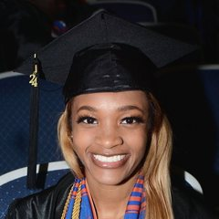
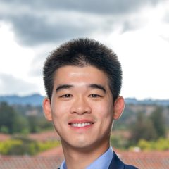

Alumni
The officers who ran Stanford Founders’ Club before today’s team.
Presidents and advisors
- Johnny ChangFormer President
- Hunter ZhangFormer Co-President
- Lukas KlaiberFormer Student Advisor
Officers
- Artur MuradiantsFormer VP of Finance
- Coco XuFormer Co-VP of AI

Deonna OwensFormer Co-VP of AI- Advit DeepakFormer Co-VP of AI
- Yash JainFormer VP of Fintech
- Kristi SunFormer VP of Health
- Xinmeng ZengFormer VP of Finance
- Chris BradburyFormer Head of Startup Relationships
- Sophie RenFormer Chief Startup Growth Officer
- Angelina YouFormer Co-VP of AI
- Aditri BhagirathFormer Co-VP of AI
- Priscilla RussoFormer Co-VP of Community Initiatives
- Mattia MauroFormer Co-VP of Community Initiatives
- Rohan ParekhFormer VP of Energy & Sustainability
- Sam XiaoFormer Co-VP of Energy & Sustainability
- Hatidje AblyatifovaFormer Officer

Casper LinFormer Officer- Alexandra ArgoFormer Officer